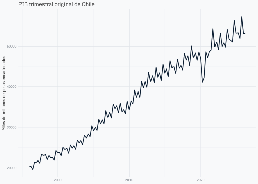
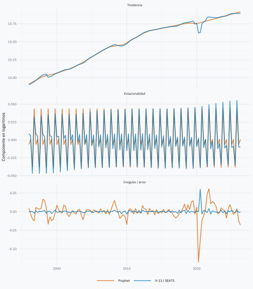
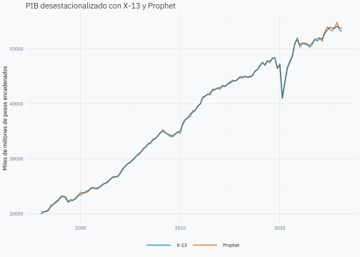
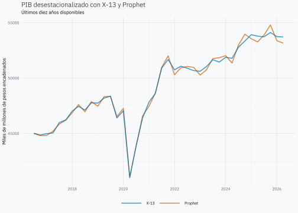

En el post anterior sobre X-13 recorrimos varias etapas para desestacionalizar el PIB. Ahora revisaremos algo más acotado: ¿cómo descomponen X-13 y Prophet la misma serie?
Ajustamos ambos modelos al logaritmo del PIB, miramos sus componentes a lo largo del tiempo y después comparamos las dos curvas desestacionalizadas. Este será un ejercicio exploratorio para entender sus diferencias.
Volvamos al PIB
Usamos la misma serie del Banco Central: PIB trimestral en volumen encadenado, referencia 2018, desde 1996 hasta el segundo trimestre de 2026. Conservamos el corte del artículo anterior; las cifras históricas pueden revisarse.
La descarga usa bcchr, disponible en GitHub, y la credencial BCCH_TOKEN configurada en .Renviron, igual que en el primer artículo.
pib <- bcchr::get_series(
"F032.PIB.FLU.R.CLP.EP18.Z.Z.0.T",
from = as.Date("1996-01-01"),
to = as.Date("2026-06-30")
) |>
transmute(date = as.Date(date), value = as.numeric(value)) |>
arrange(date)
# Ambos modelos necesitan los mismos trimestres, sin huecos ni valores faltantes.
stopifnot(
identical(pib$date, seq.Date(
as.Date("1996-01-01"), as.Date("2026-04-01"), by = "3 months"
)),
all(is.finite(pib$value)),
all(pib$value > 0)
)
tail(pib)# A tibble: 6 × 2
date value
<date> <dbl>
1 2025-01-01 53213.
2 2025-04-01 53310.
3 2025-07-01 51876.
4 2025-10-01 57247.
5 2026-01-01 53040.
6 2026-04-01 53211.Cada fila es un trimestre y value está en miles de millones de pesos encadenados. Primero miremos la serie, antes de pedirle nada a los modelos.

El nivel cambia mucho en treinta años. Trabajaremos con log(value) para expresar el patrón estacional de manera proporcional al tamaño de la economía.
Ajustemos los dos modelos
En X-13 conservamos la especificación del ejercicio anterior: logaritmos, detección de valores atípicos puntuales (AO) y cambios de nivel (LS), y descomposición SEATS.
Prophet combina una tendencia por tramos con una estacionalidad anual. Como tenemos datos trimestrales, usamos una curva anual sencilla, con dos armónicos de Fourier, y desactivamos los patrones semanales y diarios. No agregamos feriados ni regresores: queremos empezar mirando sus componentes básicos. Evaluaremos el modelo solo en las fechas trimestrales observadas, sin interpretar lo que ocurra entre ellas.
# A tibble: 6 × 2
ds y
<date> <dbl>
1 1996-01-01 9.92
2 1996-04-01 9.92
3 1996-07-01 9.88
4 1996-10-01 9.97
5 1997-01-01 9.97
6 1997-04-01 9.99modelo_prophet <- prophet(
entrada,
# Un orden bajo porque solo observamos cuatro fechas al año.
yearly.seasonality = 2,
weekly.seasonality = FALSE,
daily.seasonality = FALSE,
# Solo comparamos componentes históricos; no calculamos intervalos.
uncertainty.samples = 0
)
ajuste_prophet <- predict(modelo_prophet, entrada)Miremos los componentes
En Prophet, trend es la tendencia, yearly es el componente anual y yhat es el ajuste completo. Lo que queda sin explicar es y - yhat.
En X-13 extraemos la tendencia-ciclo, el estacional y el irregular de SEATS. Los ponemos en tres paneles, en la misma escala logarítmica para ambos modelos.
componentes <- bind_rows(
tibble::tibble(
date = pib$date,
modelo = "X-13 / SEATS",
tendencia = as.numeric(seasonal::trend(modelo_x13)),
estacionalidad = as.numeric(series(modelo_x13, "seats.seasonal")),
restante = as.numeric(seasonal::irregular(modelo_x13))
),
tibble::tibble(
date = pib$date,
modelo = "Prophet",
tendencia = ajuste_prophet$trend,
estacionalidad = ajuste_prophet$yearly,
restante = entrada$y - ajuste_prophet$yhat
)
)
head(componentes)# A tibble: 6 × 5
date modelo tendencia estacionalidad restante
<date> <chr> <dbl> <dbl> <dbl>
1 1996-01-01 X-13 / SEATS 9.90 0.00875 -0.000424
2 1996-04-01 X-13 / SEATS 9.92 0.00573 0.000872
3 1996-07-01 X-13 / SEATS 9.93 -0.0467 0.000427
4 1996-10-01 X-13 / SEATS 9.94 0.0325 -0.00418
5 1997-01-01 X-13 / SEATS 9.96 0.00842 0.00264
6 1997-04-01 X-13 / SEATS 9.98 0.00535 -0.00213 componentes |>
pivot_longer(
c(tendencia, estacionalidad, restante),
names_to = "componente", values_to = "valor"
) |>
mutate(
componente = factor(
componente,
levels = c("tendencia", "estacionalidad", "restante"),
labels = c("Tendencia", "Estacionalidad", "Irregular / error")
)
) |>
ggplot(aes(date, valor, colour = modelo)) +
# Una transparencia leve permite distinguir las curvas superpuestas.
geom_line(linewidth = 0.7, alpha = 0.75) +
scale_colour_manual(values = c(
"X-13 / SEATS" = "#0072B2", "Prophet" = "#D55E00"
)) +
# Cada componente necesita su escala para que se vean sus variaciones.
facet_wrap(vars(componente), ncol = 1, scales = "free_y") +
labs(x = NULL, y = "Componente en logaritmos", colour = NULL)
Ahora podemos mirar cada parte por separado. En la tendencia comparamos una tendencia-ciclo de SEATS con la curva por tramos de Prophet. En la estacionalidad, SEATS permite cambios en el tiempo; Prophet mantiene los coeficientes de su patrón anual constantes.
El último panel requiere cuidado: el irregular de SEATS y el error de ajuste de Prophet no son la misma cosa. X-13 hace antes un preajuste regARIMA de calendario y valores atípicos; esos efectos no están incluidos en los tres componentes de SEATS que mostramos. Prophet no tiene ese preajuste en este ejemplo, de modo que esos movimientos pueden quedar en su tendencia o en su error. No interpretaríamos un panel más tranquilo como prueba de un modelo mejor.
Las dos curvas desestacionalizadas
Para X-13 usamos directamente final(). Para Prophet restamos yearly al logaritmo observado y volvemos a niveles. Así conservamos la tendencia y el error: desestacionalizar no equivale a quedarnos solo con trend.
comparacion <- pib |>
transmute(
date,
# final() está en logaritmos porque esa fue la entrada de X-13.
x13 = exp(as.numeric(seasonal::final(modelo_x13))),
prophet = exp(log(value) - ajuste_prophet$yearly)
) |>
pivot_longer(c(x13, prophet), names_to = "modelo", values_to = "pib")
grafico_ajuste <- ggplot(comparacion, aes(date, pib, colour = modelo)) +
geom_line(linewidth = 0.7, alpha = 0.75) +
scale_colour_manual(
values = c(x13 = "#0072B2", prophet = "#D55E00"),
breaks = c("x13", "prophet"),
labels = c("X-13", "Prophet")
) +
labs(
title = "PIB desestacionalizado con X-13 y Prophet",
x = NULL, y = "Miles de millones de pesos encadenados", colour = NULL
)
grafico_ajuste
La historia completa muestra el recorrido del PIB. Ahora acerquémonos a los últimos diez años disponibles para distinguir mejor las dos curvas.
# La ventana depende del último dato, no de la fecha de ejecución.
inicio_reciente <- seq.Date(max(comparacion$date), by = "-10 years", length.out = 2)[2]
comparacion_reciente <- comparacion |>
filter(date > inicio_reciente)
# Reemplazamos los datos y conservamos las capas y colores del gráfico completo.
grafico_ajuste_reciente <- grafico_ajuste + comparacion_reciente +
labs(subtitle = "Últimos diez años disponibles")
grafico_ajuste_reciente
Las dos series siguen un recorrido parecido, aunque el ajuste con Prophet conserva oscilaciones más pronunciadas en algunos periodos. Esto plantea la posibilidad de que el patrón anual fijo de esta especificación no capture completamente la estacionalidad del PIB. Para sostener esa interpretación debemos comprobar si las oscilaciones se repiten sistemáticamente en los mismos trimestres, mediante un diagnóstico de estacionalidad residual.
Una curva más suave no implica, por sí sola, una mejor desestacionalización. La serie ajustada conserva movimientos irregulares y shocks económicos: no esperamos que coincida con la tendencia ni que desaparezca, por ejemplo, la caída de 2020. Por ahora, la mayor irregularidad visual de Prophet es una observación que merece revisión, no evidencia suficiente para declarar que su ajuste es peor. Esta lectura se limita a la especificación y la muestra que usamos en el ejercicio.
La curva de X-13 puede quitar también efectos de calendario seleccionados en el regARIMA; la de Prophet solo descuenta su componente anual. Estamos viendo el resultado de estas dos especificaciones, no una comparación con todos los supuestos igualados. Ninguna de ellas debe confundirse con la serie oficial desestacionalizada del Banco Central.
¿Qué nos deja la comparación?
Usamos los mismos datos, pero cada método reparte sus movimientos de una manera distinta. Estas son las diferencias que conviene tener presentes al interpretar los gráficos y elegir qué explorar después.
| Aspecto | X-13 / SEATS | Prophet de este ejercicio |
|---|---|---|
| Tendencia | Tendencia-ciclo derivada del modelo ARIMA. | Tendencia por tramos con cambios de pendiente regularizados. |
| Estacionalidad | Puede evolucionar con el tiempo. | Patrón anual de Fourier con coeficientes constantes. |
| Calendario y episodios atípicos | El preajuste regARIMA permite calendario y detección AO/LS. | No incorporamos feriados ni intervenciones explícitas. |
| Fortaleza | Marco especializado en ajuste estacional, con diagnósticos y preajustes. | Estructura aditiva que facilita inspeccionar componentes e incorporar efectos conocidos. |
| Limitación | El resultado depende de la especificación y puede revisarse al agregar datos. | El patrón anual fijo puede ser restrictivo; con datos trimestrales no interpretamos la curva entre observaciones. |
| Lo que queda sin explicar | Irregular de SEATS, después del preajuste. | Error respecto del ajuste, sin una estructura ARIMA explícita. |
Hasta aquí llega nuestra exploración por ahora. Las curvas nos ayudan a entender las descomposiciones, pero no permiten declarar un ganador. Para comparar capacidad de pronóstico necesitaríamos una evaluación fuera de muestra; para evaluar ajuste estacional, también revisaríamos los diagnósticos de estacionalidad residual y la estabilidad frente a revisiones.
Referencias
- Banco Central de Chile, PIB trimestral, volumen encadenado, referencia 2018 — fuente de datos; corte en el segundo trimestre de 2026.
- Joshua Kunst, bcchr — acceso a las series del Banco Central desde R.
- U.S. Census Bureau, X-13ARIMA-SEATS — sistema de ajuste estacional.
- Prophet, datos no diarios y estacionalidad — componentes anuales de Fourier y precauciones al trabajar con datos agregados.